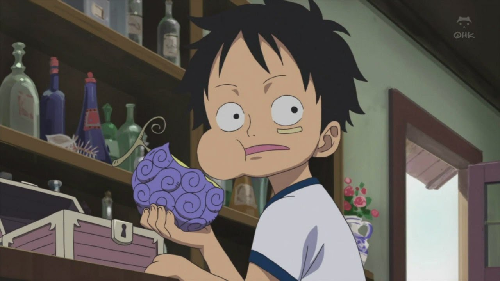
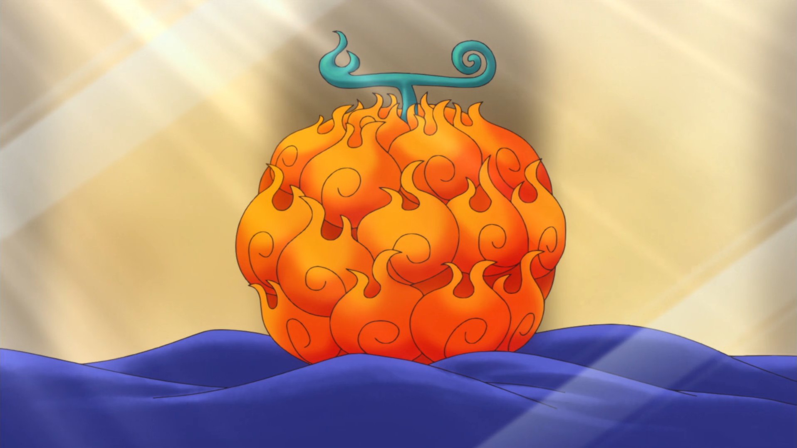

Третья причина
Задумка и сюжет. Задумка с необычными фруктами,
дающими тебе особенные силы очень интресна и
необычна. Очень интресно наблюдать за тем, как
они используют их и сражаются при помощи них.
Часто заставляет задасться вопросом, как вообще
можно победить. Что можно этому противопоставить.
И ты заворожённо смотришь на то, как
разворачивается сюжет и главные герои
преодолевают трудности вставшие на их пути.
Возможно, кому-то задумка может показаться
простой и неинтересной, ведь главный герой просто
хочет стать лучшим, грубо говоря. Но я считаю, что то,
как показан путь по которому он идёт, чтобы достичь
цели, невероятно интересный и захватывающий.

